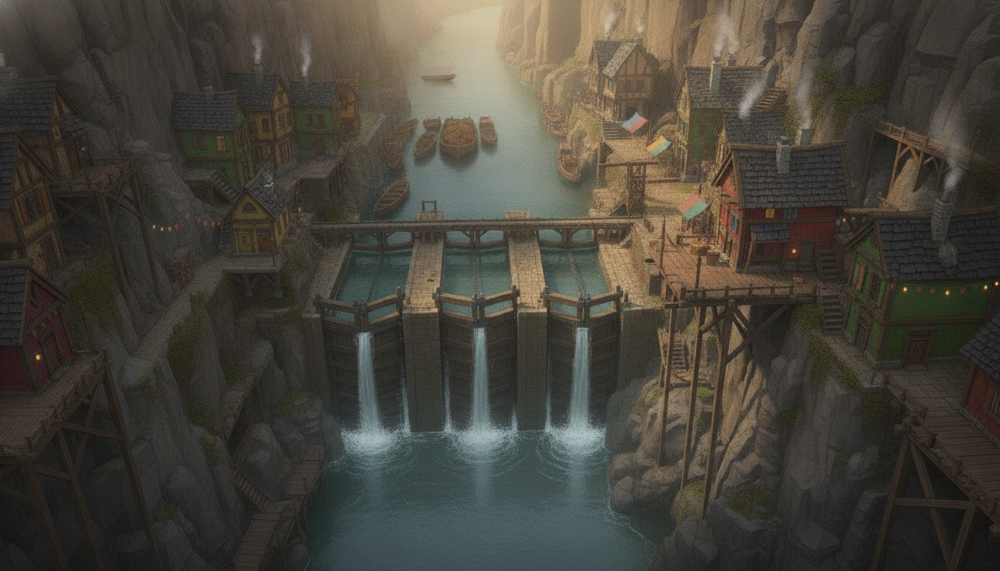
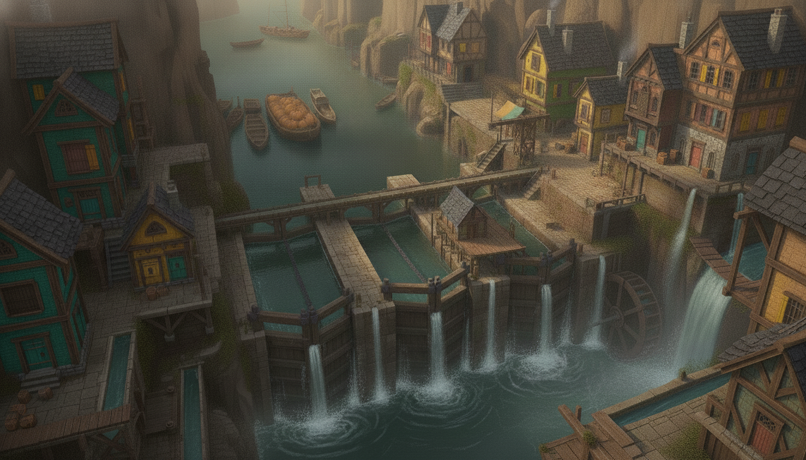
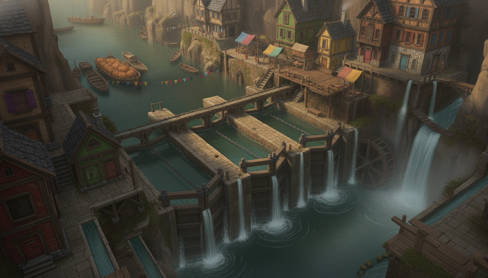
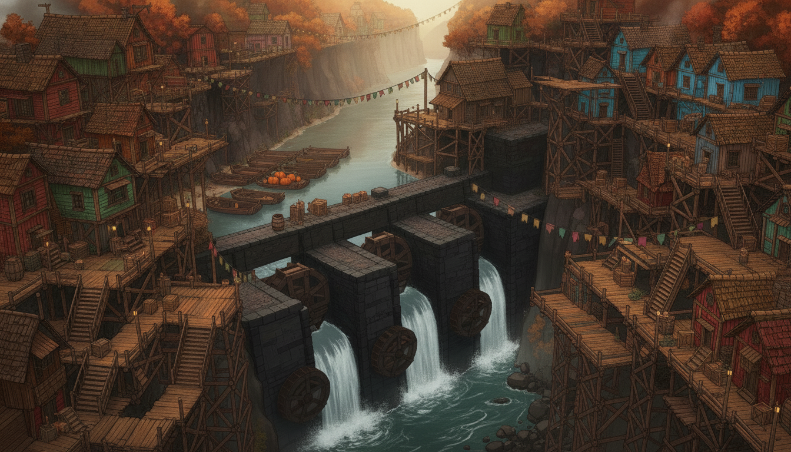
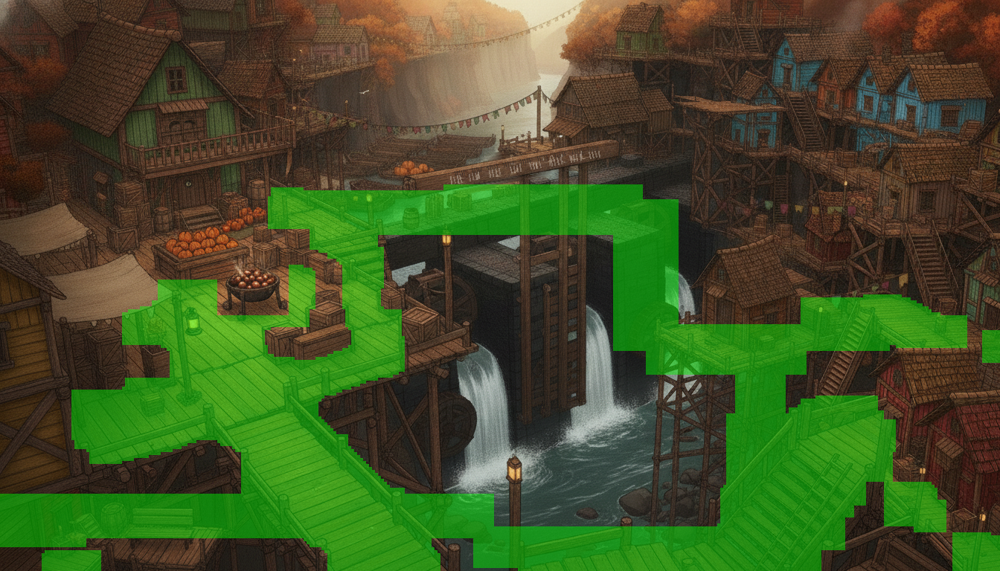

Dellhollow main-town rework — director's choice
Three candidate reinterpretations of the town painting under the new thesis: not a town
beside water infrastructure but a town made of water — channels, piles, and races interleaved
with the buildings themselves. No masks or engine staging yet; POIs will be re-staged around the chosen
painting. Click any image to zoom. Rolls parked in assets/scenes/dellhollow/candidates/.
Current (for comparison)

current —
dellhollow/main.png. The painting being replaced. Verdict it drew: beautiful, but the town sits on pavement
next to the locks — quay on one side, water on the other, and never the twain. The three candidates below
each dissolve that boundary a different way.
Candidate A — the canal town (water as streets)

candidate A —
Venice-meets-gorge: the houses rise sheer from the water, canals duck under them through arched tunnels, a humpback
bridge steps over the main channel, and boats moor at doorsteps. The rafted queue and pumpkin barge read clearly
upper-left; a chained lock gate with its waterwheel holds the right edge; the black-timber deep-stairs sit on their
own outcrop lower-right; and the bench at the quay's dock edge is already the night-scene set — water on three
sides, bollard posts, lantern reach. Stages well: the market beats (that big quay is the most generous
walkable stage of the three), the night dock scene (best of the three), the jam. Stages poorly:
only one lock is painted and its balance beams / chalk tally beam don't read — the tally-beam
beat would need the near gate timber to carry it; no distinct guildhall (row houses only); the least radical of the
three — the quay still gives it a "dry town core" that softens the thesis.
Candidate B — the stilt town (wood over water)

candidate B —
Fishing-village Dellhollow: every lane is a boardwalk on tarred piles, the current visibly churns under the
town's floor everywhere, decks overhang the water, drying-fish racks and nets dress the rails, and each house keeps
a painted boat at a private jetty. The pumpkin barge and rafted queue anchor upper-left; the market deck with its
chestnut brazier and loud awnings is the town's living room; a chained lock gate and waterwheel span mid-right; the
black stair drops away lower-right. Stages well: the supper-deck beat (the overhanging decks ARE the beat),
the jam (boats crowd every jetty), any scene that wants the river audible underfoot — this is the strongest literal
water-interleaving of the three. Stages poorly: no readable guildhall (the big house
upper-right is modest); the night dock scene has no bench — it would stage on the low jetty lower-center instead;
one lock only, tally beam not painted; and the near-total absence of stone may flatten the contrast with lockfive's
black-timber chamber below.
Candidate C — the cascade town (the locks as spine)

candidate C —
The gorge keeps its verticality and the water pours THROUGH the town: three lock chambers step down the middle of
the frame as the town's spine, spillways sheet off every terrace, a waterwheel turns behind the falls, side-flumes
thread the lower-left, and the stacked houses answer with the loudest facades of the three (green, yellow, oxblood,
blue shutters). The stopped queue and pumpkin barge wait in the pool above the locks — cause and effect in
one glance, which no other candidate manages. Deep-stairs lower-right descend beside the falling water; bunting and
laundry stitch the gorge. Stages well: the arrival read-aloud, the chart/tally beat (lockhead terrace with
bench, right where Beat 3 wants it), the jam, and "the way down" — the locks falling into the lower pool make the
descent a promise the whole painting keeps. Stages poorly: the camera sits higher and
farther than the family's other paintings, so characters will stage smaller; walkable ground is fragmented terraces
(the eventual mask will be the hardest of the three); the night dock scene has only a small lockhead bench, no cozy
quay edge; the market is the smallest of the three. A few sub-10px stall shapes on the upper terraces could read as
figures at full zoom — flag for a touch-up pass if C is chosen.
Master concept — the scaffold town
The director's hybrid, zoomed out to the whole town: candidate C's cascade spine kept, but the
material logic split — stone only for the Order-era dam and lock chambers the water pushes against; the
village itself is generations of rickety timber scaffolding climbing both gorge walls, hull-paint facades and all.
This is the MASTER reference every later scene painting (main town, stair-street, cottage, vista) will be generated
against. Judged on: (a) stone-vs-wood material logic, (b) interleaving scaffold layers, (c) a findable keeper's
house over the locks, (d) whole-town legibility. Files in assets/refs/.

master 1 — recommended —
Elevated three-quarter aerial from the southwest, river arriving at top and tailwater filling the bottom.
(a) Material logic: the best of the three — every house is painted timber (green, yellow, oxblood, red) and
stone appears only in the lock walls, gates and the rock of the gorge itself; the one debatable note is slate-grey
roofs and a stone chimney or two, which the family style shares. (b) Scaffold layers: strong — the right-bank
red house rides a tall trestle with a plank bridge running under it, the left bank stacks platform walkways, and
ladders/stairs stitch the levels. (c) Keeper's house: unmistakable — the red timber house right of the locks,
open deck on long struts directly over the water, lit lamp by the door. (d) Legibility: whole loop reads in
one glance — queue pooled above the jam, three gates spilling, tailwater below. Weaknesses: the
boat queue is thinner than C's (about nine hulls, barge now hay-brown rather than pumpkin-orange), and the light is
hazier/more golden than C's crisp autumn. One cleanup generation was spent removing two or three tiny market
figures; the model re-rendered rather than patched, so this is effectively a second roll of the same camera — it
came back cleaner and figure-free (zoom-verified).

master 2 —
Three-quarter from high on the west wall, closest to candidate C's own camera (the requested frontal-from-downstream
framing did not take). (c) Keeper's house: best-in-show — a small timber house with a broad open deck perched
ON the lock island itself, water on three sides; exactly the Odessa-and-Maren house the later scenes want.
(d) Legibility: good — pumpkin barge and queue upper-left, locks center, wheel and tailwater right.
(b) Scaffold layers: decent on the left bank (teal/yellow plank houses on posts) and under the right-bank
walk, but thinner than master 1. (a) Material logic: partial miss — the tall right-bank houses
keep grey stone masonry ground floors under their timber uppers; a dedicated repaint instruction failed to convert
them (PIPELINE.md's "removal edits fail" rule held). Cost two cleanup generations: the first removed the awning
crowd but re-rendered new figures onto the keeper's deck; the second cleared the deck and terrace except one lone
8×18px figure, which was patched out locally with a feathered clone stamp (free, zoom-verified invisible). Now
people-free, but the stone ground floors stand as a noted miss.

master 3 —
Three-quarter from the east, camera slightly lower and closer, as-generated (no cleanup spent).
(b) Scaffold layers: its best feature — the big mid-frame market deck on timber posts overhanging the lock
approach, with an under-deck walkway and stairs, is the strongest single piece of scaffold architecture in any roll.
(d) Legibility: good; queue and pumpkin barge read clearly. (a) Material logic: same
partial miss as master 2 — stone ground floors on the tall right-bank houses, and the near cottages sit on stone
terraces rather than timber platforms, so the "wooden town on a stone dam" thesis blurs. (c) Keeper's house: the
weakest — the lockhead has a market deck and a storage booth but no readable dwelling over the water; a later scene
would have to invent it. Red post-like shapes near the stalls were zoom-checked and read as painted posts, not
figures; otherwise clean.
Ranking: 1 > 2 > 3. Master 1 is the only roll that fully delivers the material-logic
hybrid and still carries a findable keeper's house; master 2 wins on the keeper's house alone and would be the pick
if its stone ground floors were repainted; master 3 contributes the best scaffold-deck vocabulary for later scene
prompts but fails the keeper's-house criterion. Six charged generations total (3 rolls + 3 cleanup edits), cap met.
REWORK FINAL — the four scenes, shipped against master 6b
The approved master is refs/dellhollow-master-6b.png (top card below). All four scene
paintings are final on disk as main.png, masks baked (tools/bakemask.py, authored
bake.json), BFS-verified all-pairs (dellhollow 13 pts / 78 pairs, stairs 10 / 45, cottage 8 / 28 — all
connect, 0 clearance carves), Gate B: 27% / 32% / 28% coverage, all exit mouths green. Full painted-reality POI map
in docs/chapter2-rework-deltas.md — including the cottage-door relocation (the keepers' house is now
the stilt-house over the locks in the town painting; Maren's "low door on the stair-street" line needs the engine
edit flagged there). Pre-rework paintings parked in each scene's candidates/pre-rework-*.

master 6b — approved reference —
binding for every painting: stone only in the dam/locks masonry; painted-timber scaffold village; hull-paint colors,
laundry, bunting, lantern-strings; autumn light; no Heartlight, no people, no text.
dellhollow — KEPT —
the prior session's rework roll, judged and confirmed: market platforms left, black lockhead center with the chalk
TALLY BEAM painted across it, rafted queue + pumpkin barge above, green guildhall with gallery, lamp-pole, dock
bench lower-left, deep stairs lower-right, and the keeper's stilt-house with reachable deck over the tailwater
(the new cottage entrance).

dellhollow — mask composite —
walkable green over the painting: quay walk, lock-top crossing (the tally-beam stage), keeper's deck and stair,
deep stairs, market decks, gangway and dock. Brazier, bins and crates blocked.

stairs — KEPT —
the scaffold vertical connector: zigzag plank flights between tiers, bread-window lower-left, spout-fed cistern
barrel center, vendor deck with fish racks and pepper strings right, chalk hop-grid and a rude (but accurate) chalk
gull on the decking, top exit to the descent, bottom exit to town.

stairs — mask composite —
the full top-to-bottom route is one connected component: top stair, upper walkway, zigzag, landings, lower deck,
cistern platform, vendor deck, lock footbridge.

cottage — PAINTED (1 roll) —
the keeper's stilt-house interior: timber walls and floor, hearth-lit, and the open deck over dark moving water at
right. All five storytelling props verified: height-tallies on the doorframe (stopping below the lintel), the
oilskin square on its peg with an empty hook beside, the keyholed drawer (plus a keyholed chart-chest on top; no key
painted anywhere), eel-spears + winch parts on the back wall, and two worn chairs + the visibly newer pale stool.
Accepted deviation: masonry hearth-stack (fire-safety logic; the one stone thing in a timber house).

cottage — mask composite —
floor and deck walkable; table, chairs, stool and dresser blocked; zero clearance carves.

vista — PAINTED (4 rolls; cutscene-only, no mask) —
the valley from above, re-matched to the scaffold town: village ribboning down both walls in hull-paint flecks,
three explicit stepped lock chambers with more implied below into the haze, the rafted queue + pumpkin barges pooled
ABOVE the locks (plain empty barges below — nothing has passed the jam), river in from the south, out north into
layered golden haze, woodsmoke leaning one way. Rolls 1–2 (rejected: master-locked, single dam step) and roll 3
(rejected: pumpkin cargo below the locks) are in vista/candidates/.